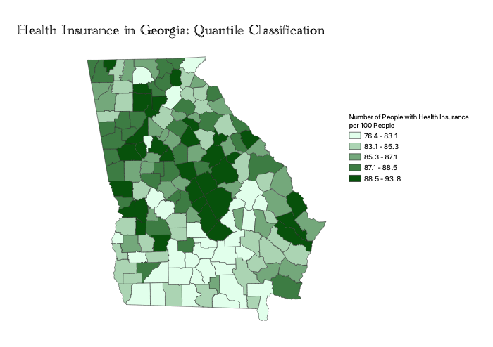
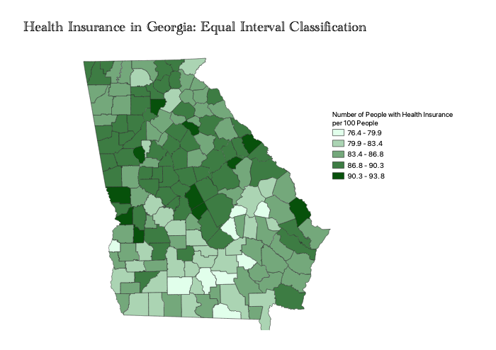
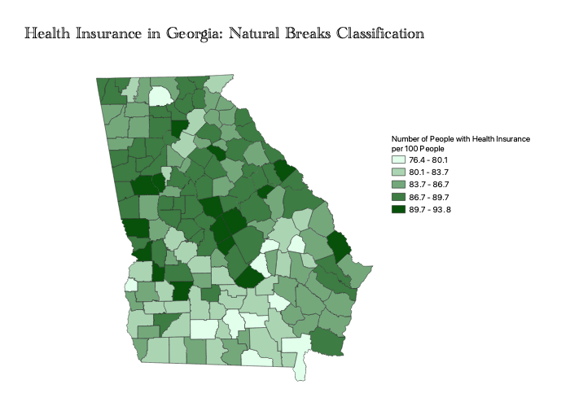

Homework 6 pt 2 - Olivia Dagenhart
Explanation of the Ratio
I chose to look at the ratio of people with health insurance compared to the total population of a county. This ratio is more useful than a simple count because it takes into account the difference in population between different counties. I chose to do the ratio per 100 people because I thought that would make it less technical, and the numbers would be easier to understand. However, I left decimals in the legend because I wanted to be as specific as possible.

The quantile method places an equal number of observations in each class (in this case, there are 5). This method is best for data is that is evenly distributed. Its strength lies in emphasizing the relative position of the data values. However, it does have a drawbacks; features that are placed within the same class could have very different values. Additionally, values with a very small difference in range could be placed into different classes, suggesting a wider difference between the data then what actually exists. This classifiction method was marginally successful for this data set, but not the best choice because the data is not evenly distributed.

The equal interval method divides the range of values into equally sized classes. It is most useful for continuous data sets. The legend is also intuitive and easy to interpret and present to a non-technical audience. However, this classification method is not good for data with a lot fo values in the same range. This was the worst of the classifiction methods for this data set because most of the counties fall in the middle classes.
